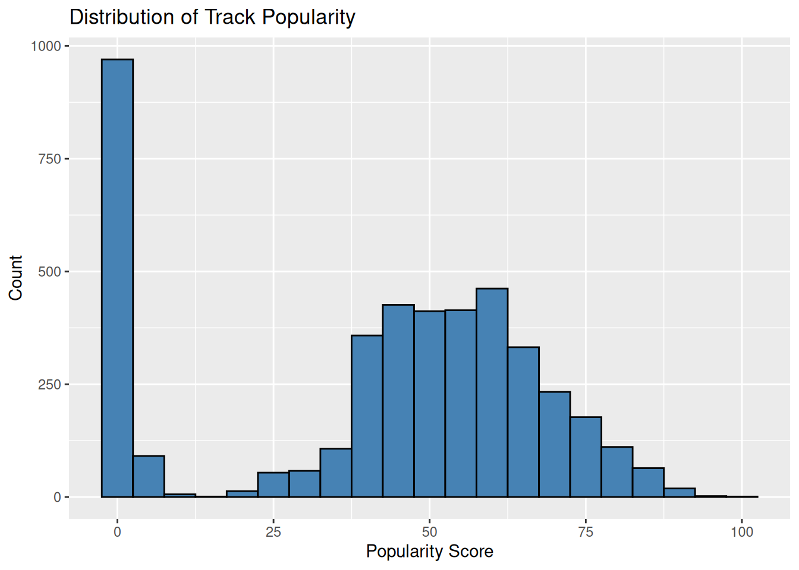
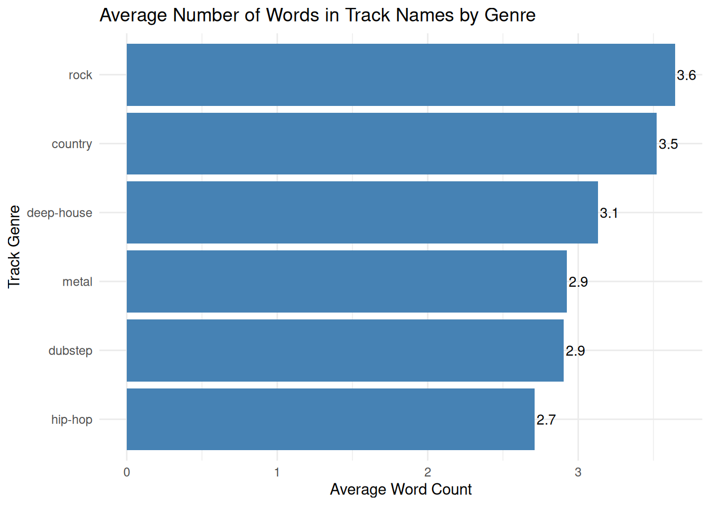
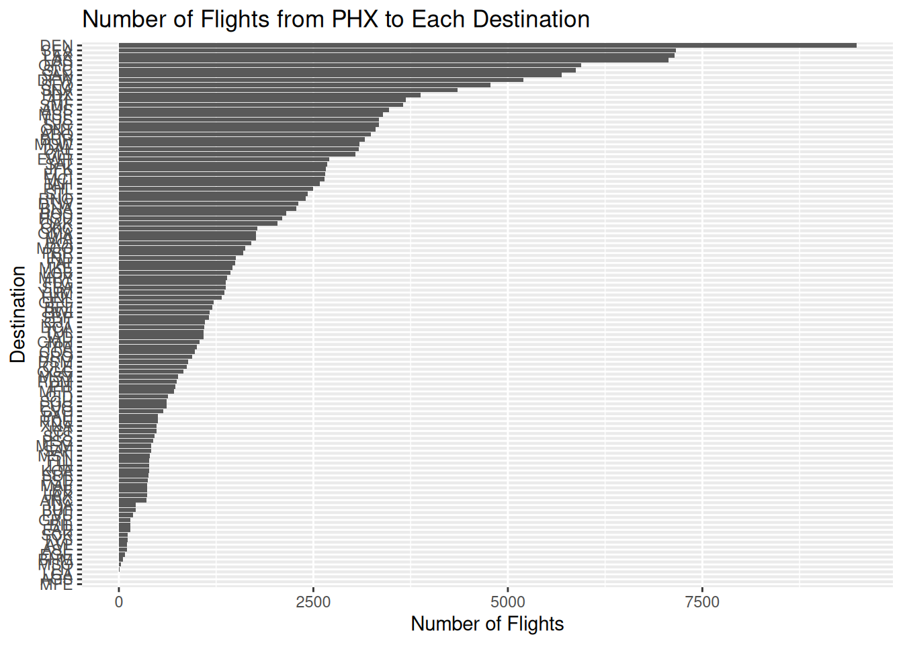
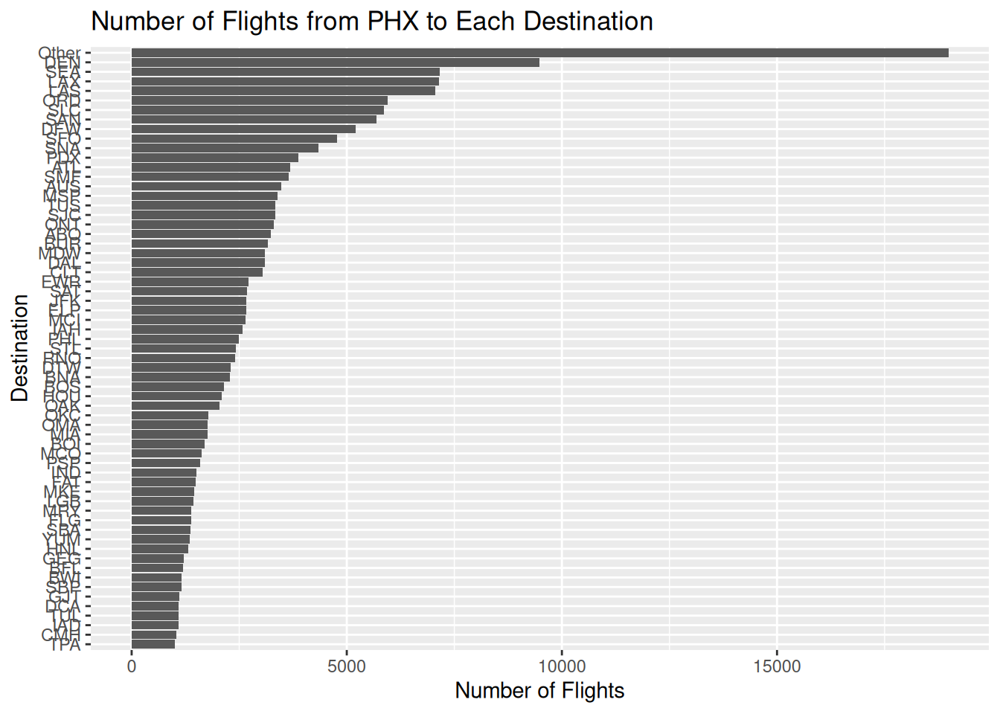
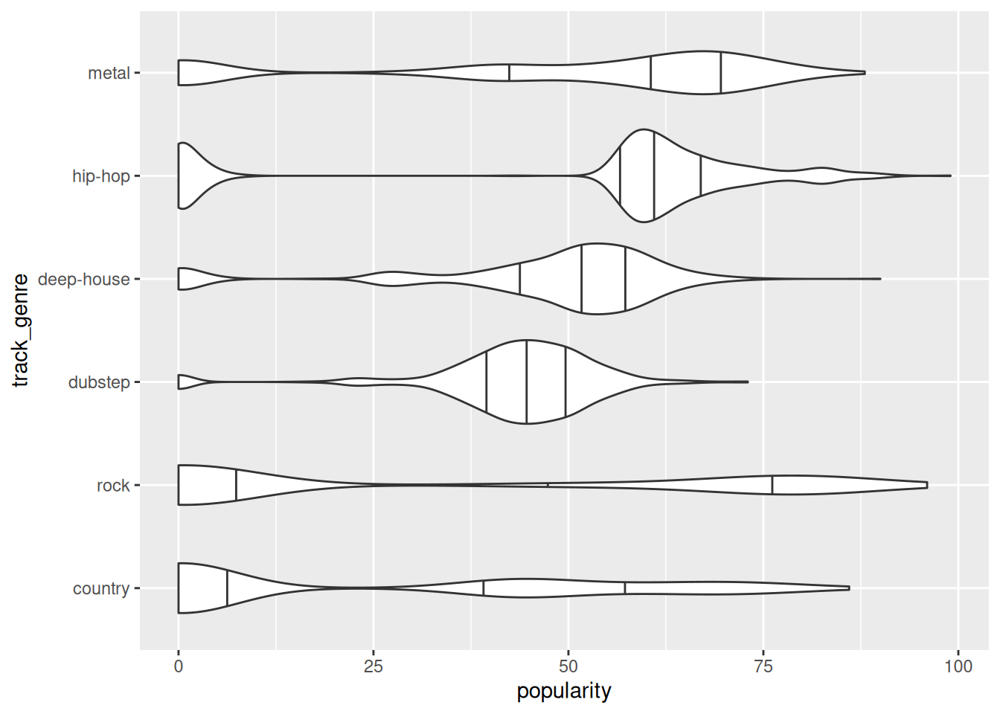
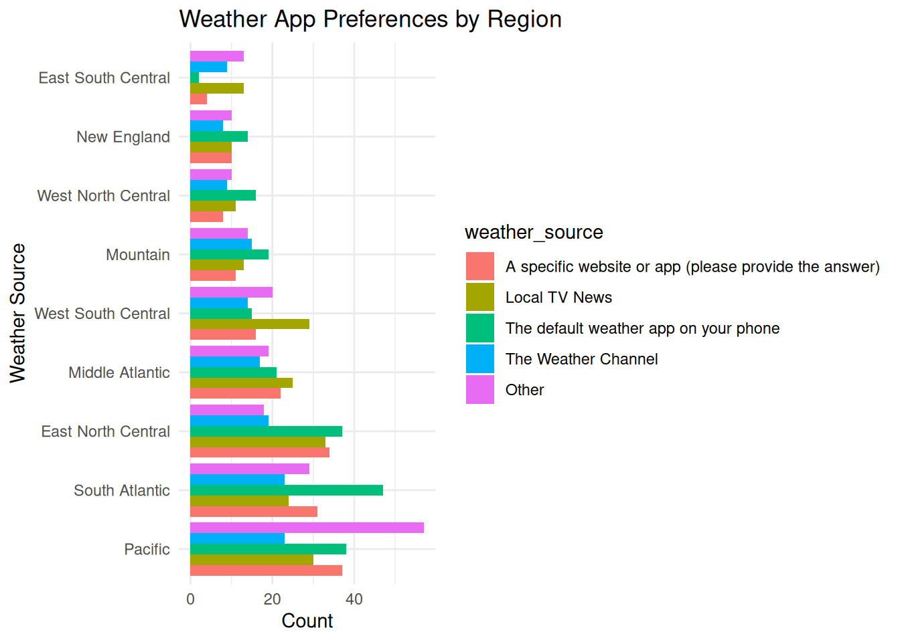

# Create a vector of package names needed for this course
packages <- c(
"moderndive", # For tidyverse-based data analysis tools and datasets
"fivethirtyeight", # Contains curated datasets from FiveThirtyEight.com
"knitr", # For formatting outputs and rendering R Markdown documents
"janitor", # For cleaning data and column names easily
"plotly", # For creating interactive visualizations
"dplyr", # For data wrangling: filter(), mutate(), summarize(), etc.
"ggplot2", # For static data visualizations using the grammar of graphics
"tidyr", # For tidying and reshaping data
"stringr", # For working with strings using consistent functions
"forcats", # For working with factors (especially useful with categorical variables)
"lubridate", # For working with date and time data
"purrr") # For functional programming tools to iterate and map over data
# Install all the packages listed above from CRAN using a reliable mirror
install.packages(packages, repos = "https://cran.rstudio.com")
# Alternative: You could install a bundled version of these packages using the tidyverse meta-package
# packages_revised <- c(
# "moderndive", "fivethirtyeight", "knitr", "janitor", "plotly",
# "tidyverse") # This includes ggplot2, dplyr, tidyr, stringr, forcats, purrr, etc.
# install.packages(packages_revised, repos = "https://cran.rstudio.com")
# Install the azflights24 package from GitHub (not available on CRAN)
install.packages("remotes") # Make sure the remotes package is available
remotes::install_github("moderndive/azflights24") # Install from GitHub directlyExploratory Data Analysis in R with the tidyverse
Day 1 Walkthrough Answers
Day 1: Exploring, Cleaning, and Organizing Data
Session 1: Foundations of EDA in R with the tidyverse
1: Installing the necessary packages
- We start by setting up our tools—installing packages that support different parts of data analysis.
- Packages like
dplyr,tidyr,ggplot2, andplotlyhelp us explore, clean, and visualize data.
stringrandlubridateare for handling text and dates, which are common in real-world datasets.
janitoris great for quickly cleaning messy column names and summarizing categorical data.
moderndiveandfivethirtyeightoffer built-in datasets and helper functions for EDA practice.
knitrhelps us format and output our work, especially when using R Markdown.
- We also install
azflights24from GitHub to explore real-world flight data later in the course.
2. Loading the packages and data
# Load packages we will need
library(dplyr)
Attaching package: 'dplyr'The following objects are masked from 'package:stats':
filter, lagThe following objects are masked from 'package:base':
intersect, setdiff, setequal, unionlibrary(ggplot2)
library(moderndive)
# I'll try to be explicit with using :: as we get started though so
# you know which package includes the function used.
# Load the spotify_by_genre dataset from the moderndive package
data("spotify_by_genre", package = "moderndive")- We load core data analysis tools like
dplyrfor wrangling andggplot2for plotting, which are part of the tidyverse.
- The
spotify_by_genredataset from themoderndivepackage gives us a real-world music dataset with numeric, categorical, and text features to explore.
Dataset Overview: spotify_by_genre
This dataset contains information on 6,000 Spotify tracks, each categorized into one of six genres: country, deep-house, dubstep, hip-hop, metal, and rock. It combines audio feature metrics, track metadata, and a popularity indicator, offering a rich foundation for analyzing music trends, exploring genre-specific characteristics, and building predictive models for track popularity.
Key Features:
- 21 variables including:
- Metadata:
track_id,artists,album_name,track_name,track_genre - Popularity:
popularity(0–100) and a binary labelpopular_or_not(≥50 considered “popular”) - Audio Features:
danceability,energy,acousticness,valence, etc. (scaled 0–1) - Musical Structure:
tempo,key,mode,time_signature - Track Attributes:
explicit(logical),duration_ms,loudness,speechiness
Source:
Data was collected using the Spotify Web API, which provides access to comprehensive track-level metadata and audio analysis.
3. Viewing the data
# View the structure of the dataset including variable types and example values
dplyr::glimpse(spotify_by_genre)Rows: 6,000
Columns: 21
$ track_id <chr> "2wrJq5XKLnmhRXHIAf9xBa", "6AHJTA1BN7ePfChCwqph3z", "5eUtyONoPyfZYGrFHmZzlc", "1e3QZ42GsP8cTy…
$ artists <chr> "Dan + Shay;Justin Bieber", "Luke Bryan", "Thomas Rhett", "Zach Bryan", "Zach Bryan", "Zach B…
$ album_name <chr> "10,000 Hours (with Justin Bieber)", "Country USA", "Mientras hago aromaterapia", "New Countr…
$ track_name <chr> "10,000 Hours (with Justin Bieber)", "Country On", "Die A Happy Man", "Something in the Orang…
$ popularity <dbl> 78, 0, 1, 3, 4, 4, 2, 2, 1, 2, 1, 0, 8, 0, 0, 2, 3, 1, 5, 0, 2, 0, 3, 0, 0, 0, 0, 0, 0, 1, 2,…
$ duration_ms <dbl> 167693, 236455, 228320, 228013, 228013, 228013, 228013, 228013, 228013, 225560, 228013, 22801…
$ explicit <lgl> FALSE, FALSE, FALSE, FALSE, FALSE, FALSE, FALSE, FALSE, FALSE, FALSE, FALSE, FALSE, FALSE, FA…
$ danceability <dbl> 0.654, 0.520, 0.590, 0.369, 0.369, 0.369, 0.369, 0.369, 0.369, 0.644, 0.369, 0.369, 0.464, 0.…
$ energy <dbl> 0.630, 0.751, 0.389, 0.192, 0.192, 0.192, 0.192, 0.192, 0.192, 0.904, 0.192, 0.192, 0.755, 0.…
$ key <dbl> 10, 5, 2, 4, 4, 4, 4, 4, 4, 2, 4, 4, 4, 4, 4, 1, 8, 4, 8, 0, 3, 4, 11, 4, 8, 8, 4, 4, 4, 8, 9…
$ loudness <dbl> -4.644, -5.064, -9.245, -12.151, -12.151, -12.151, -12.151, -12.151, -12.151, -4.532, -12.151…
$ mode <dbl> 1, 1, 1, 0, 0, 0, 0, 0, 0, 1, 0, 0, 1, 0, 0, 1, 1, 0, 1, 1, 1, 0, 1, 0, 1, 1, 0, 1, 0, 1, 1, …
$ speechiness <dbl> 0.0259, 0.0551, 0.0387, 0.0400, 0.0400, 0.0400, 0.0400, 0.0400, 0.0400, 0.0464, 0.0400, 0.040…
$ acousticness <dbl> 0.15300, 0.17100, 0.41100, 0.55500, 0.55500, 0.55500, 0.55500, 0.55500, 0.55500, 0.02950, 0.5…
$ instrumentalness <dbl> 0.00e+00, 7.40e-06, 1.48e-06, 8.35e-06, 8.35e-06, 8.35e-06, 8.35e-06, 8.35e-06, 8.35e-06, 0.0…
$ liveness <dbl> 0.1110, 0.0624, 0.1170, 0.0954, 0.0954, 0.0954, 0.0954, 0.0954, 0.0954, 0.0834, 0.0954, 0.095…
$ valence <dbl> 0.430, 0.519, 0.389, 0.148, 0.148, 0.148, 0.148, 0.148, 0.148, 0.672, 0.148, 0.148, 0.449, 0.…
$ tempo <dbl> 89.991, 156.044, 166.055, 175.212, 175.212, 175.212, 175.212, 175.212, 175.212, 105.969, 175.…
$ time_signature <dbl> 4, 4, 4, 3, 3, 3, 3, 3, 3, 4, 3, 3, 4, 3, 3, 4, 4, 3, 4, 4, 4, 3, 3, 3, 4, 4, 3, 4, 3, 4, 4, …
$ track_genre <chr> "country", "country", "country", "country", "country", "country", "country", "country", "coun…
$ popular_or_not <chr> "popular", "not popular", "not popular", "not popular", "not popular", "not popular", "not po…# Open the dataset in a spreadsheet-style viewer (interactive, only works in RStudio)
View(spotify_by_genre)glimpse()gives a quick overview of the dataset’s structure, helping us see column types and example values at a glance.
- Using
View()in RStudio opens the dataset in a scrollable spreadsheet format, making it easier to explore variable names and spot early patterns.
- Key variables for analysis include
popularity,track_genre, and features likedanceability,energy, andexplicit, which offer a mix of numeric and categorical data.
4. Remove songs listed multiple times in the data
# Remove duplicate songs based on the track_name column
# .keep_all = TRUE keeps the first full row for each unique track_name
spotify <- spotify_by_genre |>
dplyr::distinct(track_name, .keep_all = TRUE)
# View the resulting cleaned dataset
spotify# A tibble: 4,311 × 21
track_id artists album_name track_name popularity duration_ms explicit danceability energy key loudness mode
<chr> <chr> <chr> <chr> <dbl> <dbl> <lgl> <dbl> <dbl> <dbl> <dbl> <dbl>
1 2wrJq5XKLnmhR… Dan + … 10,000 Ho… 10,000 Ho… 78 167693 FALSE 0.654 0.63 10 -4.64 1
2 6AHJTA1BN7ePf… Luke B… Country U… Country On 0 236455 FALSE 0.52 0.751 5 -5.06 1
3 5eUtyONoPyfZY… Thomas… Mientras … Die A Hap… 1 228320 FALSE 0.59 0.389 2 -9.24 1
4 1e3QZ42GsP8cT… Zach B… New Count… Something… 3 228013 FALSE 0.369 0.192 4 -12.2 0
5 43WFp6WBAvNgc… Luke B… Tailgate … Country G… 2 225560 FALSE 0.644 0.904 2 -4.53 1
6 16LAkUOZbmqdH… Thomas… Sad Count… Slow Down… 8 216764 FALSE 0.464 0.755 4 -5.71 1
7 6rfDtM5aHbsaL… Florid… Sad Count… Stay 2 200426 FALSE 0.493 0.931 1 -2.99 1
8 24NRxtqD6oySj… Zach B… Country C… Oklahoma … 3 211739 FALSE 0.544 0.573 8 -5.69 1
9 3opqy7HYeNHQa… Thomas… Tailgate … Put It On… 0 184800 FALSE 0.554 0.757 0 -4.30 1
10 66ERrn57fmkbO… Zach B… rainy day… November … 2 243709 FALSE 0.429 0.197 3 -9.80 1
# ℹ 4,301 more rows
# ℹ 9 more variables: speechiness <dbl>, acousticness <dbl>, instrumentalness <dbl>, liveness <dbl>, valence <dbl>,
# tempo <dbl>, time_signature <dbl>, track_genre <chr>, popular_or_not <chr>- We use
distinct()to remove duplicate songs based ontrack_name, keeping only the first full row for each unique title. - This step helps prevent repeated entries from biasing our analysis and ensures each song is counted only once.
5. Take a random sample of the data
# Set a random seed so results are reproducible
set.seed(2025)
# Take a random sample of 10 rows from the full dataset
spotify |>
dplyr::slice_sample(n = 10)# A tibble: 10 × 21
track_id artists album_name track_name popularity duration_ms explicit danceability energy key loudness mode
<chr> <chr> <chr> <chr> <dbl> <dbl> <lgl> <dbl> <dbl> <dbl> <dbl> <dbl>
1 0HJ7K7uauPS05… CALVO;… Let Me Lo… Let Me Lo… 57 160748 FALSE 0.406 0.88 5 -5.56 1
2 1G09oEhz0Tye3… KDrew;… Prism Prism 48 165882 FALSE 0.561 0.847 3 -5.03 0
3 0DRMigVA7KEsu… Hunter… Chillin' … You Shoul… 0 176552 FALSE 0.609 0.66 6 -5.66 1
4 2qZBjaOuBM8M8… ILLENI… Top of th… Story of … 0 240608 FALSE 0.537 0.884 0 -4.09 0
5 0HGpVO2aqh9Da… Faith … Finest Co… Like We N… 0 257693 FALSE 0.494 0.467 2 -8.18 1
6 61bUwAYTGluUH… Embody I Miss You I Miss You 48 176000 FALSE 0.702 0.828 0 -3.07 1
7 71BwuaJ5VjGx9… The Ki… Home For … Don't Sho… 0 245106 FALSE 0.588 0.847 8 -4.16 1
8 2VTtxoSgxXQS7… WE ARE… DUALITY Sad Story 41 183111 FALSE 0.499 0.587 7 -5.91 0
9 0apCPw4wHWMtW… Whales… High High 47 184258 FALSE 0.616 0.643 6 -5.86 0
10 20hTmPgYgVWwt… Tyler … Bottles a… Silence 42 125413 FALSE 0.502 0.301 7 -12.5 1
# ℹ 9 more variables: speechiness <dbl>, acousticness <dbl>, instrumentalness <dbl>, liveness <dbl>, valence <dbl>,
# tempo <dbl>, time_signature <dbl>, track_genre <chr>, popular_or_not <chr># Take a random sample of 10 rows but focus only on selected columns
spotify |>
dplyr::select(track_name, artists, track_genre, popularity) |>
dplyr::slice_sample(n = 10)# A tibble: 10 × 4
track_name artists track_genre popularity
<chr> <chr> <chr> <dbl>
1 "Take on Me" a-ha rock 85
2 "Dawood" Sidhu Moose Wala hip-hop 63
3 "Tere Naal Nachna (From \"Nawabzaade\")" Badshah;Sunanda Sharma hip-hop 60
4 "Paper Thin - Headhunterz Remix" ILLENIUM;Tom DeLonge;Angels & Airwaves;Headhunterz dubstep 57
5 "More" Jan Blomqvist;Elena Pitoulis deep-house 62
6 "The Fight Song" Marilyn Manson metal 1
7 "Summertime Sadness" Y.V.E. 48 deep-house 0
8 "Dracula" King hip-hop 56
9 "THATS WHAT I WANT" Lil Nas X hip-hop 87
10 "No More Sorrow" Linkin Park metal 48- We use
slice_sample()to view a random subset of songs, which helps us get a quick feel for the dataset’s content.
- Setting a seed ensures the sample is reproducible, which is helpful for teaching or collaboration.
- Using
select()lets us narrow down to key columns like song name, artist, genre, and popularity for a more focused look.
6. Spot-checking unique genres
# Count the number of tracks in each genre and sort from most to least
spotify |>
dplyr::count(track_genre, sort = TRUE)# A tibble: 6 × 2
track_genre n
<chr> <int>
1 deep-house 903
2 dubstep 871
3 metal 775
4 hip-hop 714
5 country 595
6 rock 453- We count how many tracks belong to each genre, which reveals how the dataset is distributed across categories.
- Sorting by count highlights which genres are most and least represented, helping us spot potential imbalances early in our analysis.
7. Checking for missing values
# For each column, count how many missing (NA) values there are
spotify |>
dplyr::summarize(across(everything(), ~sum(is.na(.)))) |>
dplyr::glimpse()Rows: 1
Columns: 21
$ track_id <int> 0
$ artists <int> 0
$ album_name <int> 0
$ track_name <int> 0
$ popularity <int> 0
$ duration_ms <int> 0
$ explicit <int> 0
$ danceability <int> 0
$ energy <int> 0
$ key <int> 0
$ loudness <int> 0
$ mode <int> 0
$ speechiness <int> 0
$ acousticness <int> 0
$ instrumentalness <int> 0
$ liveness <int> 0
$ valence <int> 0
$ tempo <int> 0
$ time_signature <int> 0
$ track_genre <int> 0
$ popular_or_not <int> 0- We check each column for missing values using
summarize()andacross(), which helps us spot potential issues before analysis.
- Identifying missing data early is essential since it can interfere with visualizations, summaries, or modeling steps later on.
8. Identifying numeric vs categorical variables
# Check the class of the entire dataset (it's a tibble/data frame)
class(spotify)[1] "tbl_df" "tbl" "data.frame"# Check the class of a specific column: track_genre (should be character or factor)
class(spotify$track_genre)[1] "character"# Check the class of a numeric column: popularity (should be numeric or integer)
class(spotify$popularity)[1] "numeric"# Use purrr::map_dfr() to apply class() to every column and return results as a data frame
purrr::map_dfr(spotify, class) # A tibble: 1 × 21
track_id artists album_name track_name popularity duration_ms explicit danceability energy key loudness mode
<chr> <chr> <chr> <chr> <chr> <chr> <chr> <chr> <chr> <chr> <chr> <chr>
1 character character character character numeric numeric logical numeric numeric numeric numeric numer…
# ℹ 9 more variables: speechiness <chr>, acousticness <chr>, instrumentalness <chr>, liveness <chr>, valence <chr>,
# tempo <chr>, time_signature <chr>, track_genre <chr>, popular_or_not <chr># Glimpse the result for a readable, wide-format view of column types
purrr::map_dfr(spotify, class) |>
dplyr::glimpse()Rows: 1
Columns: 21
$ track_id <chr> "character"
$ artists <chr> "character"
$ album_name <chr> "character"
$ track_name <chr> "character"
$ popularity <chr> "numeric"
$ duration_ms <chr> "numeric"
$ explicit <chr> "logical"
$ danceability <chr> "numeric"
$ energy <chr> "numeric"
$ key <chr> "numeric"
$ loudness <chr> "numeric"
$ mode <chr> "numeric"
$ speechiness <chr> "numeric"
$ acousticness <chr> "numeric"
$ instrumentalness <chr> "numeric"
$ liveness <chr> "numeric"
$ valence <chr> "numeric"
$ tempo <chr> "numeric"
$ time_signature <chr> "numeric"
$ track_genre <chr> "character"
$ popular_or_not <chr> "character"- We use
class()to identify the type of the dataset and specific columns, such astrack_genreandpopularity.
- This helps us confirm whether a column is numeric, character, factor, or another type.
class(spotify)tells us that the dataset is stored as a tibble/data frame.
- Checking individual columns like
track_genreandpopularityhelps us know how R will treat them in summaries and plots.
purrr::map_dfr()appliesclass()to every column and returns the results in a tidy format.
- Understanding variable types is critical because it guides how we clean, summarize, visualize, and model the data. (Here’s a mind map to help you get started with basic types if needed.)
9. Creating summary tables
# Use dplyr to compute common summary statistics for the popularity column
spotify |>
dplyr::summarize(
avg_popularity = mean(popularity), # Mean (average) popularity
median_popularity = median(popularity), # Median popularity
sd_popularity = sd(popularity) # Standard deviation of popularity
)# A tibble: 1 × 3
avg_popularity median_popularity sd_popularity
<dbl> <dbl> <dbl>
1 41.7 48 26.3# Use moderndive's tidy_summary() to get a full summary of one or more columns
spotify |>
moderndive::tidy_summary(columns = popularity)# A tibble: 1 × 11
column n group type min Q1 mean median Q3 max sd
<chr> <int> <chr> <chr> <dbl> <dbl> <dbl> <dbl> <dbl> <dbl> <dbl>
1 popularity 4311 <NA> numeric 0 22 41.7 48 61 99 26.3- We calculate summary statistics like mean, median, and standard deviation to understand the center and spread of the
popularityvariable.
- The mean gives the average popularity, while the median shows the midpoint, and the standard deviation tells us how much scores vary.
summarize()is a flexible way to compute custom statistics for any variable.
tidy_summary()from themoderndivepackage provides a full summary in one step, including min, max, and quartiles.
- Using both methods together gives a quick yet detailed picture of a variable’s distribution.
- These summaries help us assess whether the data is skewed, spread out, or centered around a typical value.
10. Quick plot of distribution
# Create a histogram to visualize the distribution of track popularity scores
ggplot(data = spotify, aes(x = popularity)) +
geom_histogram(binwidth = 5, fill = "steelblue", color = "black") +
labs(title = "Distribution of Track Popularity",
x = "Popularity Score",
y = "Count")
- We use a histogram to explore how the
popularityscores are distributed across all tracks.
binwidth = 5groups scores into intervals of 5, making it easier to see patterns and trends.
- Most bars show how many songs fall within each popularity range, helping us spot common and rare values.
- The visualization helps us check for skew—whether most songs are clustered toward high or low popularity.
- It also makes it easier to spot outliers or unusual peaks in the data.
- This plot gives us a solid starting point for understanding overall patterns before diving into comparisons or models.
Session 1 Review Questions
(1.1) Why is Exploratory Data Analysis (EDA) considered a crucial first step in any data science project?
A. It allows you to train models more quickly.
B. It helps reveal patterns, identify data issues, and guide analysis decisions.
C. It replaces the need for data cleaning by automating it.
D. It transforms all variables into numeric format for modeling.
(1.2) What is the role of the distinct() function in preparing your data?
A. It filters out rows with missing values.
B. It removes duplicate rows based on selected columns.
C. It transforms all character variables into factors.
D. It visualizes the distribution of numeric variables.
(1.3) What does the spotify_by_genre dataset contain?
A. Only audio features from 6,000 classical music tracks
B. Survey results about Spotify users’ listening habits
C. Metadata and audio features of 6,000 songs across six genres
D. Real-time streaming counts of trending tracks globally
(1.4) Which function is best used to take a random subset of rows from a dataset?
A. sample_n()
B. slice_sample()
C. randomize()
D. filter()
(1.5) What is the purpose of using purrr::map_dfr() in this session?
A. To count the number of missing values in a column
B. To classify songs into popular and non-popular categories
C. To apply a function across all columns and return the results in a single data frame
D. To create visualizations for each genre using ggplot2
Session 1 Review Question Answers
(1.1) Why is Exploratory Data Analysis (EDA) considered a crucial first step in any data science project?
Correct Answer:
B. It helps reveal patterns, identify data issues, and guide analysis decisions.
Explanation:
EDA helps uncover structure, detect errors, and build intuition about the dataset before modeling or advanced analysis.
(1.2) What is the role of the distinct() function in preparing your data?
Correct Answer:
B. It removes duplicate rows based on selected columns.
Explanation:
Using distinct() ensures you’re not analyzing repeated entries, which could bias your results.
(1.3) What does the spotify_by_genre dataset contain?
Correct Answer:
C. Metadata and audio features of 6,000 songs across six genres
Explanation:
This dataset combines categorical and numeric variables useful for EDA, such as genre, popularity, danceability, and more.
(1.4) Which function is best used to take a random subset of rows from a dataset?
Correct Answer:
B. slice_sample()
Explanation:
slice_sample() provides a random selection of rows, which is useful for quick spot-checks or previews of the data.
(1.5) What is the purpose of using purrr::map_dfr() in this session?
Correct Answer:
C. To apply a function across all columns and return the results in a single data frame
Explanation:
This function was used to inspect the class of each column by mapping class() over the dataset and combining the results row-wise.
Session 2: Data Cleaning Fundamentals with dplyr, tidyr, and janitor
11. Filtering and selecting columns
# Select a subset of columns and rename track_genre to genre
# Then take a random sample of 20 rows to explore
spotify |>
select(track_name, artists, genre = track_genre, popularity, energy,
danceability) |>
slice_sample(n = 20)# A tibble: 20 × 6
track_name artists genre popularity energy danceability
<chr> <chr> <chr> <dbl> <dbl> <dbl>
1 Somewhere That I Belong Fairla… dubs… 0 0.911 0.532
2 Don't Worry My Love Kaivon dubs… 55 0.804 0.511
3 Falling to Pieces Faith … metal 41 0.919 0.545
4 In Your Eyes (feat. Alida) - LUM!X Remix Robin … deep… 54 0.777 0.692
5 Baanina Haniyu Raghu … rock 47 0.384 0.484
6 Bella Luna Jason … rock 1 0.454 0.755
7 If the World Was Ending Hannah… coun… 49 0.399 0.492
8 Hanji Hanji Amrit … hip-… 63 0.553 0.871
9 Wolf Totem The HU metal 61 0.718 0.557
10 An Old Fashioned Love Song - Single Version Three … coun… 0 0.555 0.456
11 Walk Away (feat. Kaptan) LVNDSC… deep… 45 0.778 0.677
12 Music Sounds Better with You Alle F… deep… 60 0.912 0.724
13 Spider Said T… dubs… 40 0.619 0.55
14 Most Really Pretty Girls Have Pretty Ugly Feet HNNY deep… 57 0.449 0.929
15 Elevator (Lift Me Up) - Jerry Ropero Tech Boom Mix Todd T… deep… 0 0.698 0.798
16 Message In A Bottle - Remastered 2003 The Po… rock 3 0.808 0.568
17 Forgotten Linkin… metal 61 0.947 0.615
18 Good Things Fall Apart vs. Sad Songs (With Said The Sky feat. Annika We… ILLENI… dubs… 59 0.555 0.563
19 Figure.09 Linkin… metal 60 0.951 0.518
20 Count On Me Hoglan… deep… 49 0.852 0.396# Filter for only songs with popularity greater than 80
# Select only key identifying columns, randomly sample 20, then arrange by popularity (descending)
spotify |>
filter(popularity > 80) |>
select(track_name, artists, popularity) |>
slice_sample(n = 20) |>
arrange(desc(popularity))# A tibble: 20 × 3
track_name artists popularity
<chr> <chr> <dbl>
1 I Ain't Worried OneRepublic 96
2 Hold Me Closer Elton John;Britney Spears 89
3 STAY (with Justin Bieber) The Kid LAROI;Justin Bieber 89
4 Bones Imagine Dragons 89
5 No Role Modelz J. Cole 88
6 Without Me Eminem 88
7 You Proof Morgan Wallen 86
8 Running Up That Hill (A Deal With God) - 2018 Remaster Kate Bush 85
9 Counting Stars OneRepublic 83
10 Safe And Sound Capital Cities 83
11 Fuck Love (feat. Trippie Redd) XXXTENTACION;Trippie Redd 83
12 MONTERO (Call Me By Your Name) Lil Nas X 83
13 Unforgettable French Montana;Swae Lee 82
14 All I Want Kodaline 82
15 Prom Queen Beach Bunny 82
16 Not Afraid Eminem 81
17 Tu Aake Dekhle King 81
18 Whiskey Glasses Morgan Wallen 81
19 Tennessee Whiskey Chris Stapleton 81
20 Heathens Twenty One Pilots 81- We use
select()to focus on specific columns, helping us reduce clutter and explore only what’s relevant.
- Renaming
track_genretogenremakes the column name shorter and easier to work with.
slice_sample()lets us inspect a small, random subset of rows, which is useful for getting a feel for the data.
filter(popularity > 80)narrows the data to only include high-popularity songs, helping us analyze standout tracks.
arrange(desc(popularity))sorts songs from most to least popular, making top-performing tracks easy to spot.
- These wrangling steps are key in EDA for zooming in on trends, patterns, or interesting subsets of your data.
12. Creating conditional flags
# Create a new logical column to flag songs with both high energy and high danceability
spotify |>
mutate(high_energy_dance = energy > 0.7 & danceability > 0.7) |>
count(high_energy_dance)# A tibble: 2 × 2
high_energy_dance n
<lgl> <int>
1 FALSE 3666
2 TRUE 645# Create a new categorical column for popularity levels using case_when
# Then count how many songs fall into each category
spotify |>
mutate(popularity_group = case_when(
popularity >= 75 ~ "high",
popularity >= 40 ~ "medium",
TRUE ~ "low"
)) |>
count(popularity_group)# A tibble: 3 × 2
popularity_group n
<chr> <int>
1 high 295
2 low 1407
3 medium 2609- We use
mutate()to create new columns based on conditions, helping us flag or group rows for deeper analysis.
- The
high_energy_dancecolumn identifies songs that are both energetic and danceable by checking if both values exceed 0.7.
- Counting
TRUEandFALSEvalues helps us see how common that combination is in the dataset.
case_when()allows us to group numeric values (like popularity) into meaningful categories such as “low,” “medium,” and “high.”
- Creating categorical groupings from continuous variables simplifies comparisons and improves visualizations.
- These custom columns make it easier to answer specific questions and communicate insights clearly.
13. Creating new columns with mutate()
# Create a new column that calculates the ratio of energy to danceability
spotify |>
mutate(energy_dance_ratio = energy / danceability) |>
select(track_name, artists, track_genre, energy,
danceability, energy_dance_ratio) |>
slice_sample(n = 20)# A tibble: 20 × 6
track_name artists track_genre energy danceability energy_dance_ratio
<chr> <chr> <chr> <dbl> <dbl> <dbl>
1 "Ele Se Foi" Oficina G3 metal 0.595 0.551 1.08
2 "Freewheelin'" Jack Wins;Caitlyn S… deep-house 0.822 0.598 1.37
3 "In Pieces" Linkin Park metal 0.886 0.508 1.74
4 "Sete" BLOND:ISH;Francis M… deep-house 0.827 0.736 1.12
5 "Meus Passos" Oficina G3 metal 0.941 0.521 1.81
6 "Kudi Nu Nachne De (From \"Angrezi Medium\")" Vishal Dadlani;Sach… hip-hop 0.688 0.834 0.825
7 "Senjitaley" Anirudh Ravichander hip-hop 0.941 0.655 1.44
8 "Welcome to the Family" Avenged Sevenfold metal 0.946 0.567 1.67
9 "Didn't I" OneRepublic rock 0.61 0.611 0.998
10 "Laal Bindi" Akull hip-hop 0.599 0.746 0.803
11 "It’s All on U" ILLENIUM;Liam O'Don… dubstep 0.82 0.498 1.65
12 "Man! I Feel Like A Woman!" Shania Twain country 0.889 0.654 1.36
13 "Never Loved You At All" Parker McCollum country 0.891 0.552 1.61
14 "Uchiyaan Dewaraan" Bilal Saeed;Momina … hip-hop 0.577 0.428 1.35
15 "Can't Stop Lovin' You" Van Halen metal 0.898 0.592 1.52
16 "Hope For The Future" Bastille rock 0.411 0.449 0.915
17 "Call on Me (Ryan Riback Remix)" Starley;Ryan Riback deep-house 0.839 0.67 1.25
18 "Sidhu Son" Sidhu Moose Wala hip-hop 0.732 0.571 1.28
19 "Wasted Years - 2015 Remaster" Iron Maiden metal 0.959 0.314 3.05
20 "B2B" James Hype;Tita Lau deep-house 0.956 0.799 1.20 # Add a logical column that flags songs with tempo greater than 140 as high tempo
# Then count how many songs fall into each category
spotify |>
mutate(high_tempo = tempo > 140) |>
count(high_tempo)# A tibble: 2 × 2
high_tempo n
<lgl> <int>
1 FALSE 3079
2 TRUE 1232- We use
mutate()to create new variables that help us explore relationships between existing features.
- The
energy_dance_ratiocompares energy and danceability, offering a new way to assess the feel of a track.
- Viewing a sample of songs with this new ratio lets us explore how it varies across genres and artists.
- Creating a
high_tempoflag helps us classify songs based on a threshold (tempo > 140 BPM).
- Logical columns like
high_tempoare useful for quick counts, filtering, or subgroup analysis.
- Adding derived variables allows us to go beyond surface-level data and uncover more meaningful patterns.
14. Grouping and summarizing
# Group the data by genre and calculate the average energy for each group
spotify |>
group_by(track_genre) |>
summarize(mean_energy = mean(energy, na.rm = TRUE))# A tibble: 6 × 2
track_genre mean_energy
<chr> <dbl>
1 country 0.628
2 deep-house 0.742
3 dubstep 0.763
4 hip-hop 0.691
5 metal 0.839
6 rock 0.661# Count how many songs are popular or not within each genre
spotify |>
count(track_genre, popular_or_not)# A tibble: 12 × 3
track_genre popular_or_not n
<chr> <chr> <int>
1 country not popular 462
2 country popular 133
3 deep-house not popular 412
4 deep-house popular 491
5 dubstep not popular 691
6 dubstep popular 180
7 hip-hop not popular 170
8 hip-hop popular 544
9 metal not popular 302
10 metal popular 473
11 rock not popular 288
12 rock popular 165- We use
group_by()andsummarize()to calculate the average energy level within each music genre.
- This helps us compare genres to see which ones tend to have more energetic tracks.
- The
na.rm = TRUEargument ensures missing values don’t interfere with our summary statistics.
- Counting by both
track_genreandpopular_or_notgives us a two-way frequency table.
- This count reveals how popularity is distributed across different genres.
- Grouped summaries are essential for spotting trends, differences, and relationships across categories.
15. Wide to long with tidyr::pivot_longer()
# Reshape selected audio features from wide format to long format
# This creates a 'feature' column for the variable name and a 'value' column for its value
spotify |>
select(track_name, energy, danceability, acousticness) |>
tidyr::pivot_longer(cols = c(energy, danceability, acousticness),
names_to = "feature",
values_to = "value")# A tibble: 12,933 × 3
track_name feature value
<chr> <chr> <dbl>
1 10,000 Hours (with Justin Bieber) energy 0.63
2 10,000 Hours (with Justin Bieber) danceability 0.654
3 10,000 Hours (with Justin Bieber) acousticness 0.153
4 Country On energy 0.751
5 Country On danceability 0.52
6 Country On acousticness 0.171
7 Die A Happy Man energy 0.389
8 Die A Happy Man danceability 0.59
9 Die A Happy Man acousticness 0.411
10 Something in the Orange energy 0.192
# ℹ 12,923 more rows- We use
pivot_longer()to reshape the dataset from wide format to long format.
- Three audio features—
energy,danceability, andacousticness—are transformed into a singlefeaturecolumn.
- Their corresponding values are placed into a new
valuecolumn, making the data more compact and tidy.
- This format is ideal for creating faceted plots or grouped summaries across multiple features.
- It allows us to treat multiple columns as levels of a single variable, which simplifies plotting and analysis.
- Reshaping data like this is a powerful technique for scaling EDA workflows.
16. Long to wide with tidyr::pivot_wider()
# Count the number of songs in each genre by popularity category
# Then reshape the data to have separate columns for 'popular' and 'not popular'
spotify |>
count(track_genre, popular_or_not) |>
tidyr::pivot_wider(names_from = popular_or_not, values_from = n)# A tibble: 6 × 3
track_genre `not popular` popular
<chr> <int> <int>
1 country 462 133
2 deep-house 412 491
3 dubstep 691 180
4 hip-hop 170 544
5 metal 302 473
6 rock 288 165- We start by counting how many songs are labeled as
popularornot popularwithin each genre.
- This gives us a tall (long) format table showing counts for each genre-popularity combination.
- Using
pivot_wider(), we reshape the data to create separate columns for “popular” and “not popular”.
- Each genre becomes a row with its respective counts shown side by side.
- This wide format makes it easier to compare popularity across genres at a glance.
- It’s useful for tables, reports, or bar plots that benefit from side-by-side values.
17. Splitting a column into multiple parts with tidyr::separate()
# Find the maximum number of artists in any single song by counting semicolons
# Add 1 since semicolons separate the names (n artists = n semicolons + 1)
max_artists <- spotify |>
filter(stringr::str_detect(artists, ";")) |>
mutate(n_artists = stringr::str_count(artists, ";") + 1) |>
pull(n_artists) |>
max(na.rm = TRUE)# Identify the song that has the most artists
spotify |>
mutate(n_artists = stringr::str_count(artists, ";") + 1) |>
arrange(desc(n_artists)) |>
slice(1) |>
select(track_name, artists, n_artists)# A tibble: 1 × 3
track_name artists n_artists
<chr> <chr> <dbl>
1 Punjabi Mashup Arjun;Badshah;Bohemia;Diljit Dosanjh;Fateh;Gippy Grewal;Girik Aman;Gupz Sehra;Guru Randhawa;… 31# Create a vector of new column names based on the maximum number of artists found
artist_cols <- paste0("artist_", seq_len(max_artists))# Use separate() to split the 'artists' column into multiple artist columns
# Use fill = "right" to handle cases with fewer than max_artists
# Keep the original 'artists' column for reference
split_by_artists <- spotify |>
filter(stringr::str_detect(artists, ";")) |>
tidyr::separate(artists, into = artist_cols, sep = ";", fill = "right", remove = FALSE) |>
select(track_name, artists, track_genre, all_of(artist_cols))
split_by_artists# A tibble: 1,704 × 34
track_name artists track_genre artist_1 artist_2 artist_3 artist_4 artist_5 artist_6 artist_7 artist_8 artist_9
<chr> <chr> <chr> <chr> <chr> <chr> <chr> <chr> <chr> <chr> <chr> <chr>
1 10,000 Hours (w… Dan + … country Dan + S… Justin … <NA> <NA> <NA> <NA> <NA> <NA> <NA>
2 Put It On Ice Thomas… country Thomas … HARDY <NA> <NA> <NA> <NA> <NA> <NA> <NA>
3 Playing With Fi… Thomas… country Thomas … Daniell… <NA> <NA> <NA> <NA> <NA> <NA> <NA>
4 10,000 Hours Dan + … country Dan + S… Justin … <NA> <NA> <NA> <NA> <NA> <NA> <NA>
5 Buy Dirt Jordan… country Jordan … Luke Br… <NA> <NA> <NA> <NA> <NA> <NA> <NA>
6 Tequila - Mushr… Dan + … country Dan + S… Mushroo… <NA> <NA> <NA> <NA> <NA> <NA> <NA>
7 Silent Night Cody J… country Cody Jo… Clara J… Brandi … Cori Jo… <NA> <NA> <NA> <NA> <NA>
8 Little Drummer … Carrie… country Carrie … Isaiah … <NA> <NA> <NA> <NA> <NA> <NA> <NA>
9 Hallelujah Carrie… country Carrie … John Le… <NA> <NA> <NA> <NA> <NA> <NA> <NA>
10 Happy Anywhere Blake … country Blake S… Gwen St… <NA> <NA> <NA> <NA> <NA> <NA> <NA>
# ℹ 1,694 more rows
# ℹ 22 more variables: artist_10 <chr>, artist_11 <chr>, artist_12 <chr>, artist_13 <chr>, artist_14 <chr>,
# artist_15 <chr>, artist_16 <chr>, artist_17 <chr>, artist_18 <chr>, artist_19 <chr>, artist_20 <chr>,
# artist_21 <chr>, artist_22 <chr>, artist_23 <chr>, artist_24 <chr>, artist_25 <chr>, artist_26 <chr>,
# artist_27 <chr>, artist_28 <chr>, artist_29 <chr>, artist_30 <chr>, artist_31 <chr># Summarize how many multi-artist songs exist by genre
split_by_artists |>
group_by(track_genre) |>
summarize(n_artists = sum(!is.na(artist_1))) |>
arrange(desc(n_artists))# A tibble: 6 × 2
track_genre n_artists
<chr> <int>
1 dubstep 616
2 deep-house 562
3 hip-hop 364
4 country 74
5 rock 59
6 metal 29- We detect songs with multiple artists by counting semicolons in the
artistscolumn, then find the maximum number of artists in any song.
slice(1)after sorting lets us identify the specific track with the most artists listed.
- We use
paste0()to dynamically generate new column names likeartist_1,artist_2, etc., based on the max number found.
- The
separate()function splits theartistscolumn into multiple new columns for easier analysis of individual contributors.
fill = "right"ensures shorter artist lists don’t break the structure—missing entries are filled withNA.
- We summarize how many multi-artist songs exist per genre to examine which genres tend to have more collaborations.
18. Uniting columns
# Combine the track_name and artists columns into a single column called track_artist
# Use " by " as the separator between the song title and the artist(s)
spotify |>
tidyr::unite("track_artist", track_name, artists, sep = " by ") |>
select(track_artist, popularity) |>
slice_sample(n = 20) |>
arrange(desc(popularity))# A tibble: 20 × 2
track_artist popularity
<chr> <dbl>
1 Do I Wanna Know? by Arctic Monkeys 88
2 Hurt by Johnny Cash 74
3 Born To Be Wild by Steppenwolf 73
4 Nightmare by Avenged Sevenfold 72
5 Hurricane by I Prevail 68
6 House Of The Rising Sun by Nora Van Elken 61
7 Sidhu Son by Sidhu Moose Wala 59
8 Baitikochi Chuste by Anirudh Ravichander 56
9 Promises by NERO 56
10 Beautiful by Deepend;Griff Clawson 56
11 Empty Floor by Jan Blomqvist 53
12 Empty Love by Lulleaux;Kid Princess 51
13 Promises - Skrillex & Nero Remix by NERO 44
14 Stomach It by Crywolf;EDEN 44
15 Forgive Me Now by BH 42
16 Ammunition by Krewella 38
17 Xelela Abazali by Deep Sen;KingTalkzin;KnightSA;Russell Zuma 29
18 Like a Movie feat. Haexxa by Alfred Heinrichs;Haexxa 26
19 O Holy Night by Lauren Alaina 0
20 Christmas Makes Me Cry by Kacey Musgraves 0- We use
unite()to mergetrack_nameandartistsinto a single column calledtrack_artistfor clearer labeling.
- The separator
" by "makes the new string easy to read and interpret, like a song title in a playlist.
- Selecting just
track_artistandpopularitykeeps the focus on key information.
- Randomly sampling 20 rows gives us a manageable view of the data.
- Sorting by descending popularity helps us quickly identify top-performing tracks.
- This technique is useful for creating labels in plots or tables that clearly identify each observation.
19. Cleaning up with janitor
# Simulate messy column names by renaming clean ones to include emojis, symbols, and inconsistent formatting
spotify_unruly <- spotify |>
rename(
`Track Name 🎵` = track_name,
`ARTISTS (main + featured)` = artists,
`Album-Name___v2` = album_name,
`DURATION (ms)` = duration_ms,
`Popularity SCORE (%)` = popularity,
`track genre!` = track_genre,
`Explicit?` = explicit,
`IS_IT_POPULAR????` = popular_or_not
) |>
mutate(valence = NA_real_) # Add an entirely empty column to test janitor functions
# Check the column names and dimensions before cleaning
names(spotify_unruly) [1] "track_id" "ARTISTS (main + featured)" "Album-Name___v2" "Track Name 🎵"
[5] "Popularity SCORE (%)" "DURATION (ms)" "Explicit?" "danceability"
[9] "energy" "key" "loudness" "mode"
[13] "speechiness" "acousticness" "instrumentalness" "liveness"
[17] "valence" "tempo" "time_signature" "track genre!"
[21] "IS_IT_POPULAR????" dim(spotify_unruly)[1] 4311 21# Clean the messy column names: make them lowercase, snake_case, and remove special characters
# Remove any completely empty columns
spotify_cleaned_some <- spotify_unruly |>
janitor::clean_names() |>
janitor::remove_empty(which = "cols")
# Check the new cleaned column names and dimensions
names(spotify_cleaned_some) [1] "track_id" "artists_main_featured" "album_name_v2" "track_name"
[5] "popularity_score_percent" "duration_ms" "explicit" "danceability"
[9] "energy" "key" "loudness" "mode"
[13] "speechiness" "acousticness" "instrumentalness" "liveness"
[17] "tempo" "time_signature" "track_genre" "is_it_popular" dim(spotify_cleaned_some)[1] 4311 20- We simulate messy data by renaming columns with emojis, inconsistent formatting, and symbols to reflect real-world issues.
clean_names()from thejanitorpackage standardizes column names to lowercase snake_case, making them easier to reference in code.
- This function also removes special characters and spaces, which can cause problems in analysis scripts.
- We add a fully missing column to test how
remove_empty()eliminates columns with onlyNAvalues.
- After cleaning, column names become consistent and safe for programming, reducing the chance of errors.
- These cleaning steps are essential when preparing raw or imported data for analysis.
20. Reordering and recoding variables
# Move the track_genre column to appear right before track_id
# Recode popular_or_not into a new column popular_recoded using case_match
# Place the new column directly after track_genre
spotify |>
relocate(track_genre, .before = track_id) |>
mutate(popular_recoded = case_match(popular_or_not,
"popular" ~ "yes",
"not popular" ~ "no"),
.after = track_genre) |>
select(1:6) |>
slice_head(n = 10)# A tibble: 10 × 6
track_genre popular_recoded track_id artists album_name track_name
<chr> <chr> <chr> <chr> <chr> <chr>
1 country yes 2wrJq5XKLnmhRXHIAf9xBa Dan + Shay;Justin Bieber 10,000 Hours (with Justin Bie… 10,000 Ho…
2 country no 6AHJTA1BN7ePfChCwqph3z Luke Bryan Country USA Country On
3 country no 5eUtyONoPyfZYGrFHmZzlc Thomas Rhett Mientras hago aromaterapia Die A Hap…
4 country no 1e3QZ42GsP8cTy5uQ0G7J3 Zach Bryan New Country Something…
5 country no 43WFp6WBAvNgc7iaFFEUJp Luke Bryan Tailgate Country Country G…
6 country no 16LAkUOZbmqdHgicUsHY1S Thomas Rhett Sad Country Songs Slow Down…
7 country no 6rfDtM5aHbsaLGAUxfIgpN Florida Georgia Line Sad Country Songs Stay
8 country no 24NRxtqD6oySjRnAZxa4Hf Zach Bryan Country Car Hits Oklahoma …
9 country no 3opqy7HYeNHQaUwYVS7cLo Thomas Rhett;HARDY Tailgate Country Put It On…
10 country no 66ERrn57fmkbOq9zhELGPv Zach Bryan rainy day indie November …- We use
relocate()to repositiontrack_genrebeforetrack_id, improving the layout for easier scanning.
mutate()withcase_match()creates a new column that recodespopular_or_notinto simpler “yes” or “no” values.
- The
.after = track_genreargument places the newpopular_recodedcolumn right aftertrack_genrefor better grouping.
- Using
select(1:6)limits our view to the first six columns, which helps keep previews focused and readable.
slice_head(n = 10)displays the first 10 rows of the updated dataset for a quick check.
- These layout and recoding steps make the dataset more intuitive and better organized for analysis or reporting.
Session 2 Review Questions
(2.1) What is the purpose of using filter() in data wrangling with dplyr?
A. To remove missing values from all columns.
B. To select specific columns by name.
C. To remove duplicate rows from a dataset.
D. To return only rows that meet a certain condition.
(2.2) What is the result of using the mutate() function in a dplyr pipeline?
A. It permanently deletes rows that contain NA values.
B. It creates new columns or modifies existing ones.
C. It filters the dataset by logical conditions.
D. It combines multiple columns into one.
(2.3) What does the following code do in the context of the spotify_by_genre dataset?
spotify |>
mutate(high_acoustic_mellow = acousticness > 0.8 & valence < 0.4)A. It filters the dataset to only include mellow and acoustic songs.
B. It creates a new variable indicating whether a song is both highly acoustic and low in valence.
C. It summarizes acousticness and valence for mellow songs.
D. It creates a histogram of acousticness for songs with low valence.
(2.4) What is the effect of pivot_longer() on a dataset?
A. It removes NA values from multiple columns.
B. It splits a character column into multiple columns.
C. It summarizes grouped values into wider format tables.
D. It transforms columns into key-value pairs, increasing the number of rows.
(2.5) Why is janitor::clean_names() helpful in the data cleaning process?
A. It changes all character variables to numeric format.
B. It fills in missing values in your dataset.
C. It converts messy column names to consistent, lowercase, snake_case format.
D. It rearranges the rows of the dataset based on alphabetical order.
Session 2 Review Question Answers
(2.1) What is the purpose of using filter() in data wrangling with dplyr?
Correct Answer:
D. To return only rows that meet a certain condition.
Explanation:
filter() keeps rows based on a logical condition, helping narrow your dataset to just what you’re interested in analyzing.
(2.2) What is the result of using the mutate() function in a dplyr pipeline?
Correct Answer:
B. It creates new columns or modifies existing ones.
Explanation:
mutate() allows you to add or alter columns using logic, math, or transformations, making it essential for feature engineering.
(2.3) What does the following code do in the context of the spotify_by_genre dataset?
spotify |>
mutate(high_acoustic_mellow = acousticness > 0.8 & valence < 0.4)Correct Answer:
B. It creates a new variable indicating whether a song is both highly acoustic and low in valence.
Explanation:
This code adds a new logical column called high_acoustic_mellow, which is TRUE if the song’s acousticness is greater than 0.8 and its valence is less than 0.4—capturing songs that are both acoustic and emotionally mellow.
(2.4) What is the effect of pivot_longer() on a dataset?
Correct Answer:
D. It transforms columns into key-value pairs, increasing the number of rows.
Explanation:
pivot_longer() reshapes wide data into long format, useful for tidy plotting and modeling.
(2.5) Why is janitor::clean_names() helpful in the data cleaning process?
Correct Answer:
C. It converts messy column names to consistent, lowercase, snake_case format.
Explanation:
This function simplifies variable names by removing special characters and spaces, making them easier to reference in code.
Session 3: Managing Dates, Strings, and Categories
21. Working with strings using stringr
library(stringr)
# Create a new column that counts the number of characters in each track name
# Then display the track names sorted by length in descending order
spotify |>
mutate(name_length = str_length(track_name)) |>
select(track_name, name_length) |>
arrange(desc(name_length)) # A tibble: 4,311 × 2
track_name name_length
<chr> <int>
1 "A Thousand Years (feat. Steve Kazee) - Pt. 2; The Twilight Saga: Breaking Dawn Soundtrack" 89
2 "Where Are You Christmas - From \"Dr. Seuss' How The Grinch Stole Christmas\" Soundtrack" 85
3 "I Put A Spell On You (Fifty Shades of Grey) - From \"Fifty Shades Of Grey\" Soundtrack" 84
4 "Last One Standing (feat. Polo G, Mozzy & Eminem) - From Venom: Let There Be Carnage" 83
5 "Double Talkin' Jive - Live In Las Vegas, Thomas & Mack Center - January 25, 1992" 80
6 "Rockin' Around The Christmas Tree - From The Kacey Musgraves Christmas Show" 75
7 "Good Things Fall Apart vs. Sad Songs (With Said The Sky feat. Annika Wells)" 75
8 "I'll Be Home For Christmas - From The Kacey Musgraves Christmas Show" 68
9 "Good Things Fall Apart (with Jon Bellion) [Tiësto's Big Room Remix]" 67
10 "Sympathy For The Devil - 50th Anniversary Edition / Remastered 2018" 67
# ℹ 4,301 more rows# Detect songs where the title includes the word "love" (case-insensitive)
# Use str_to_lower to ensure consistent matching
(
love_songs <- spotify |>
filter(str_detect(str_to_lower(track_name), "love")) |>
select(track_genre, track_name)
)# A tibble: 147 × 2
track_genre track_name
<chr> <chr>
1 country I Love My Country
2 country Fall in Love
3 country Never Been in Love
4 country Don't Fall In Love With A Dreamer
5 country Like We Never Loved at All
6 country Let's Make Love
7 country Drunk on Your Love
8 country I Love You, I Love You
9 country You Should Be Loved
10 country Love Will Keep Us Alive
# ℹ 137 more rows# Count how many "love" songs appear in each genre
# Calculate the percentage of total songs that mention "love" for each genre
love_songs |>
mutate(love = 1) |>
group_by(track_genre) |>
summarize(n_love = sum(love)) |>
ungroup() |>
mutate(pct_love = n_love / nrow(spotify) * 100) |>
arrange(desc(pct_love))# A tibble: 6 × 3
track_genre n_love pct_love
<chr> <dbl> <dbl>
1 deep-house 55 1.28
2 dubstep 31 0.719
3 hip-hop 21 0.487
4 country 20 0.464
5 metal 11 0.255
6 rock 9 0.209- We use
str_length()to measure the number of characters in each song title, helping us identify especially long or short track names.
- Sorting by
name_lengthreveals songs with the most elaborate titles.
str_detect()finds tracks that contain the word “love” in the title, usingstr_to_lower()to ensure case-insensitive matching.
- This lets us explore themes in the data—like how often love appears in song titles.
- We add a flag (
love = 1) to count and summarize how many love-themed songs exist in each genre.
- Calculating percentages gives insight into which genres most frequently use “love” in their track titles relative to the full dataset.
22. Extracting and replacing substrings
# Remove all parentheses from track names
spotify |>
mutate(track_name_clean = str_remove_all(track_name, "\\(.*?\\)")) |>
select(track_name, track_name_clean)# A tibble: 4,311 × 2
track_name track_name_clean
<chr> <chr>
1 10,000 Hours (with Justin Bieber) "10,000 Hours "
2 Country On "Country On"
3 Die A Happy Man "Die A Happy Man"
4 Something in the Orange "Something in the Orange"
5 Country Girl (Shake It For Me) "Country Girl "
6 Slow Down Summer "Slow Down Summer"
7 Stay "Stay"
8 Oklahoma Smokeshow "Oklahoma Smokeshow"
9 Put It On Ice "Put It On Ice"
10 November Air "November Air"
# ℹ 4,301 more rows# Extract featured artist from parentheses
spotify |>
mutate(featuring = str_extract(
track_name,
"(?i)(?<=\\()(with|feat\\.)[^)]*(?=\\))")) |>
select(track_name, featuring) |>
mutate(featuring = str_replace_all(featuring, "with |feat. ", "")) |>
filter(!is.na(featuring))# A tibble: 261 × 2
track_name featuring
<chr> <chr>
1 10,000 Hours (with Justin Bieber) Justin Bieber
2 Whiskey Lullaby (feat. Alison Krauss) Alison Krauss
3 10,000 Hours (with Justin Bieber) - Piano Justin Bieber
4 I Hope (feat. Charlie Puth) Charlie Puth
5 Dance with the Devil (feat. Katie Noel & Chucky V) Katie Noel & Chucky V
6 On Me (feat. Ava Max) Ava Max
7 Take Me Home (with Kane Brown) Kane Brown
8 What Ifs (feat. Lauren Alaina) Lauren Alaina
9 Trying to Reason With Hurricane Season (with Jimmy Buffett) Jimmy Buffett
10 Sugar (feat. Francesco Yates) Francesco Yates
# ℹ 251 more rows- We use
str_remove_all()with a non-greedy regex to remove any text in parentheses from song titles, creating a cleaner version oftrack_name.
- The regex
"\\(.*?\\)"ensures only the text inside the first set of parentheses is removed, not everything between the first(and the last).
- This cleaning step is useful for removing remix labels or featured artist notes for clearer display or grouping.
- In the second block, we use
str_extract()to pull out featured artist names from parentheses that include “with” or “feat.”
- The use of lookarounds
(?<=\\()and(?=\\))ensures we extract the content inside the parentheses without including the parentheses themselves.
- After extracting, we strip out “with” or “feat.” using
str_replace_all()to leave just the artist names, which can be helpful for analyzing collaborations.
23. Wrangling artists into long format
# Use separate_rows() to split multiple artists into individual rows
# This turns collaborations into separate entries for each artist
(
artists_long <- spotify |>
tidyr::separate_rows(artists, sep = ";")
)# A tibble: 6,642 × 21
track_id artists album_name track_name popularity duration_ms explicit danceability energy key loudness mode
<chr> <chr> <chr> <chr> <dbl> <dbl> <lgl> <dbl> <dbl> <dbl> <dbl> <dbl>
1 2wrJq5XKLnmhR… Dan + … 10,000 Ho… 10,000 Ho… 78 167693 FALSE 0.654 0.63 10 -4.64 1
2 2wrJq5XKLnmhR… Justin… 10,000 Ho… 10,000 Ho… 78 167693 FALSE 0.654 0.63 10 -4.64 1
3 6AHJTA1BN7ePf… Luke B… Country U… Country On 0 236455 FALSE 0.52 0.751 5 -5.06 1
4 5eUtyONoPyfZY… Thomas… Mientras … Die A Hap… 1 228320 FALSE 0.59 0.389 2 -9.24 1
5 1e3QZ42GsP8cT… Zach B… New Count… Something… 3 228013 FALSE 0.369 0.192 4 -12.2 0
6 43WFp6WBAvNgc… Luke B… Tailgate … Country G… 2 225560 FALSE 0.644 0.904 2 -4.53 1
7 16LAkUOZbmqdH… Thomas… Sad Count… Slow Down… 8 216764 FALSE 0.464 0.755 4 -5.71 1
8 6rfDtM5aHbsaL… Florid… Sad Count… Stay 2 200426 FALSE 0.493 0.931 1 -2.99 1
9 24NRxtqD6oySj… Zach B… Country C… Oklahoma … 3 211739 FALSE 0.544 0.573 8 -5.69 1
10 3opqy7HYeNHQa… Thomas… Tailgate … Put It On… 0 184800 FALSE 0.554 0.757 0 -4.30 1
# ℹ 6,632 more rows
# ℹ 9 more variables: speechiness <dbl>, acousticness <dbl>, instrumentalness <dbl>, liveness <dbl>, valence <dbl>,
# tempo <dbl>, time_signature <dbl>, track_genre <chr>, popular_or_not <chr># Count how many times each artist appears across all tracks
# Artists involved in collaborations will be counted multiple times
artists_long |>
count(artists, sort = TRUE)# A tibble: 2,688 × 2
artists n
<chr> <int>
1 ILLENIUM 91
2 Anirudh Ravichander 79
3 Sidhu Moose Wala 63
4 Linkin Park 59
5 SLANDER 35
6 Seven Lions 34
7 Tritonal 29
8 AP Dhillon 28
9 Red Hot Chili Peppers 28
10 Porter Robinson 27
# ℹ 2,678 more rows- We use
separate_rows()to split theartistscolumn into multiple rows whenever songs have more than one artist listed.
- This transformation puts the data in long format, allowing each artist to be analyzed individually—even in collaborations.
- All other columns (e.g., track name, genre) are repeated for each artist, preserving context.
- Using
count()on theartistscolumn gives us a ranked list of how frequently each artist appears.
- This method captures both solo tracks and group efforts, giving a more complete view of artist participation.
- It’s especially useful for identifying the most active or featured artists in the dataset.
24. Cleaning and recoding categories
# Use fct_lump() to group all but the top 3 most common genres into "Other"
spotify |>
mutate(track_genre = forcats::fct_lump(track_genre, n = 3)) |>
count(track_genre)# A tibble: 4 × 2
track_genre n
<fct> <int>
1 deep-house 903
2 dubstep 871
3 metal 775
4 Other 1762# View the current counts for popular_or_not to check the ordering and distribution
spotify |>
count(popular_or_not)# A tibble: 2 × 2
popular_or_not n
<chr> <int>
1 not popular 2325
2 popular 1986# Reorder factor levels for popular_or_not so that "popular" appears first
spotify |>
mutate(popular_or_not = forcats::fct_relevel(popular_or_not, "popular")) |>
count(popular_or_not)# A tibble: 2 × 2
popular_or_not n
<fct> <int>
1 popular 1986
2 not popular 2325- We use
fct_lump()to combine less common genres into an “Other” category, keeping the focus on the top 3 most frequent ones.
- This simplifies plots and summaries by reducing clutter from too many categories.
count(popular_or_not)helps us inspect the current distribution and order of that categorical variable.
- We use
fct_relevel()to move"popular"to the first position, which can influence plotting order and improve clarity.
- Reordering factor levels helps ensure categories appear in a meaningful or intuitive order in visualizations.
- These factor tools from the
forcatspackage are essential for making categorical variables more analysis- and presentation-friendly.
25. Counting words in track names
library(forcats)
# Create a new column that counts the number of words in each track name
spotify |>
mutate(
word_count = str_count(track_name, "\\w+")
) |>
# Group by genre and calculate the average word count per genre
group_by(track_genre) |>
summarize(
avg_words = mean(word_count, na.rm = TRUE),
.groups = "drop"
) |>
# Reorder genres based on average word count for clearer plotting
mutate(track_genre = fct_reorder(track_genre, avg_words)) |>
# Create a horizontal bar chart of average word counts by genre
ggplot(aes(x = track_genre, y = avg_words)) +
geom_col(fill = "steelblue") +
# Add the rounded average word count at the end of each bar
geom_text(aes(label = round(avg_words, 1)), hjust = -0.1, size = 3.5) +
# Flip coordinates so genres appear on the y-axis
coord_flip() +
# Add labels and title
labs(
title = "Average Number of Words in Track Names by Genre",
x = "Track Genre",
y = "Average Word Count"
) +
# Apply a clean minimal theme
theme_minimal()
- We use
str_count()with the\\w+pattern to count the number of words in each track title.
- Grouping by
track_genreand calculating the mean gives us the average word count per genre.
fct_reorder()reorders genres based on average word count, improving the readability of the plot.
- A horizontal bar chart (
geom_col()withcoord_flip()) displays genre comparisons clearly.
geom_text()adds numeric labels to each bar, making the values easy to interpret at a glance.
- This combines text processing and visualization to uncover stylistic patterns in how songs are titled across genres.
26. Checking for artists appearing in multiple genres
library(tidyr)
# Split artists so each appears in their own row (for collaborations)
spotify |>
separate_rows(artists, sep = ";") |>
# Keep only distinct artist–genre pairs
distinct(artists, track_genre) |>
# Group by artist and filter for those appearing in more than one genre
group_by(artists) |>
filter(n_distinct(track_genre) > 1) |>
# Sort alphabetically and display artist–genre combinations
arrange(artists) |>
select(artists, track_genre)# A tibble: 115 × 2
# Groups: artists [57]
artists track_genre
<chr> <chr>
1 Alok dubstep
2 Alok rock
3 Asking Alexandria dubstep
4 Asking Alexandria metal
5 Atreyu dubstep
6 Atreyu metal
7 BANNERS dubstep
8 BANNERS rock
9 Billy Ray Cyrus country
10 Billy Ray Cyrus hip-hop
# ℹ 105 more rows- We use
separate_rows()to split collaborations so each artist appears on their own row.
distinct()ensures we only keep unique artist–genre pairs, removing duplicates.
- Grouping by artist allows us to analyze their genre diversity across tracks.
filter(n_distinct(track_genre) > 1)identifies artists who appear in more than one genre.
- Sorting and selecting just
artistsandtrack_genregives a clean view of cross-genre activity.
- This technique highlights artist versatility and reveals patterns of collaboration across genres.
27. Parsing dates with lubridate and azflights24
# Load the azflights24 and lubridate packages for flight data and date manipulation
library(azflights24)
library(lubridate)
Attaching package: 'lubridate'The following objects are masked from 'package:base':
date, intersect, setdiff, union# Preview a random sample of flight records
flights |>
slice_sample(n = 30)# A tibble: 30 × 19
year month day dep_time sched_dep_time dep_delay arr_time sched_arr_time arr_delay carrier flight tailnum origin
<int> <int> <int> <int> <int> <dbl> <int> <int> <dbl> <chr> <int> <chr> <chr>
1 2024 5 7 1544 1552 -8 2140 2217 -37 AA 644 N954NN PHX
2 2024 11 20 732 735 -3 836 840 -4 WN 141 N8759Q PHX
3 2024 10 7 1330 1335 -5 1649 1651 -2 OO 1316 N732SK PHX
4 2024 2 8 1710 1712 -2 2331 2359 -28 AA 119 N443AA PHX
5 2024 5 3 1731 1725 6 1849 1855 -6 WN 878 N436WN PHX
6 2024 11 27 859 900 -1 1006 1000 6 WN 347 N930WN PHX
7 2024 11 30 2255 2300 -5 2353 2353 0 OO 1754 N774SK PHX
8 2024 8 30 1719 1715 4 2122 2120 2 WN 725 N258WN PHX
9 2024 3 7 953 959 -6 1051 1106 -15 OO 1046 N724EV PHX
10 2024 7 10 839 843 -4 1105 1120 -15 OO 1085 N521SY PHX
# ℹ 20 more rows
# ℹ 6 more variables: dest <chr>, air_time <dbl>, distance <dbl>, hour <dbl>, minute <dbl>, time_hour <dttm># Create a proper date column by combining year, month, and day
(
flights_fixed <- flights |>
mutate(flight_date = make_date(year, month, day)) |>
select(flight, origin, dest, carrier, year, month, day, flight_date)
)# A tibble: 221,144 × 8
flight origin dest carrier year month day flight_date
<int> <chr> <chr> <chr> <int> <int> <int> <date>
1 1024 PHX CLT AA 2024 1 1 2024-01-01
2 643 PHX EWR UA 2024 1 1 2024-01-01
3 126 PHX DCA AA 2024 1 1 2024-01-01
4 1155 PHX DFW F9 2024 1 1 2024-01-01
5 1260 PHX EWR NK 2024 1 1 2024-01-01
6 376 PHX MCO F9 2024 1 1 2024-01-01
7 152 PHX ORD UA 2024 1 1 2024-01-01
8 1379 PHX ATL F9 2024 1 1 2024-01-01
9 99 PHX DEN WN 2024 1 1 2024-01-01
10 410 PHX SAT WN 2024 1 1 2024-01-01
# ℹ 221,134 more rows# Extract the month name (abbreviated) from the flight_date column for PHX-origin flights
flights |>
filter(origin == "PHX") |>
mutate(
flight_date = make_date(year, month, day),
month_name = month(flight_date, label = TRUE)
) |>
count(month_name)# A tibble: 12 × 2
month_name n
<ord> <int>
1 Jan 15378
2 Feb 14823
3 Mar 17375
4 Apr 16531
5 May 16741
6 Jun 15326
7 Jul 15733
8 Aug 15416
9 Sep 15081
10 Oct 16978
11 Nov 16827
12 Dec 17342- We use
make_date()fromlubridateto combine year, month, and day into a properDatecolumn, simplifying date operations.
- Creating a
flight_datecolumn makes it easier to filter, sort, or extract time-based features.
- Using
month(flight_date, label = TRUE)lets us extract readable, abbreviated month names.
- Filtering for flights from Phoenix (
PHX) helps narrow the focus to a specific origin airport.
count(month_name)shows the number of flights from PHX by month, revealing potential seasonal trends.
- This workflow highlights how
lubridateintegrates smoothly with tidyverse tools for effective date manipulation and analysis.
28. Reordering factors for better visualizations with forcats and ggplot2
Example 1
# Filter for flights that originated in PHX
# Count how many flights went to each destination
# Reorder destinations so the bars display in order of frequency
flights |>
filter(origin == "PHX") |>
count(dest) |>
mutate(dest = forcats::fct_reorder(dest, n)) |>
ggplot(aes(x = dest, y = n)) +
geom_col() +
coord_flip() +
labs(title = "Number of Flights from PHX to Each Destination",
x = "Destination", y = "Number of Flights")
# Filter for flights from PHX again
# Group rare destinations with fewer than 1000 flights into an "Other" category
# Reorder factor levels by count and visualize as a bar chart
flights |>
filter(origin == "PHX") |>
mutate(dest_lumped = forcats::fct_lump_min(
dest, min = 1000, other_level = "Other")
) |>
count(dest_lumped, name = "n") |>
mutate(dest_lumped = fct_reorder(dest_lumped, n)) |>
ggplot(aes(x = dest_lumped, y = n)) +
geom_col() +
coord_flip() +
labs(
title = "Number of Flights from PHX to Each Destination",
x = "Destination",
y = "Number of Flights"
)
Example 2
# Reorder track genres by the median popularity of their songs
# Create a violin plot with quantile lines to show distribution
spotify |>
mutate(track_genre = fct_reorder(track_genre, popularity, .fun = median)) |>
ggplot(aes(x = track_genre, y = popularity)) +
geom_violin(draw_quantiles = c(0.25, 0.5, 0.75)) +
coord_flip()
- We use
fct_reorder()to sort bars in descending order of flight count, making plots easier to read and interpret.
coord_flip()rotates the bar chart so destinations appear on the y-axis—ideal for longer text labels.
fct_lump_min()groups destinations with fewer than 1000 flights into an “Other” category, reducing clutter.
- These techniques highlight the most traveled routes from Phoenix while simplifying less important details.
- In the second example, we reorder genres by the median popularity of songs to make genre comparisons more meaningful.
- Violin plots with quantile lines reveal the distribution and spread of song popularity within each genre, not just the average.
29. Interactive line plot of 6-hour wind speed averages
# Prepare weather data for PHX and FLG airports during July 2024
# Bin timestamps into 6-hour intervals, create human-readable labels
weather_az_binned <- azflights24::weather |>
filter(origin %in% c("PHX", "FLG")) |>
filter(between(time_hour, ymd("2024-07-01"), ymd("2024-07-31"))) |>
mutate(
time_bin_start = floor_date(time_hour, unit = "6 hours"),
time_bin_end = time_bin_start + hours(6),
label = str_c(
wday(time_bin_start, label = TRUE), ", ",
month(time_bin_start, label = TRUE), " ",
day(time_bin_start), " @ ",
strftime(time_bin_start, "%I:%M %p"), "–",
strftime(time_bin_end, "%I:%M %p")
)
) |>
group_by(origin, time_bin_start, label) |>
summarize(avg_temp = mean(temp, na.rm = TRUE), .groups = "drop") |>
mutate(
tooltip_text = str_c(
label, "\n",
"Avg Temp: ", round(avg_temp, 1), "°F"
)
)# Create a ggplot line chart with interactive tooltips using plotly
p <- ggplot(weather_az_binned, aes(x = time_bin_start, y = avg_temp,
text = tooltip_text, group = origin)) +
geom_line(aes(color = origin)) +
geom_point(color = "black") +
labs(
title = "Average Temperature in Phoenix and Flagstaff (6-Hour Intervals) for July 2024",
x = "July 6-hour Time Bins",
y = "Avg Temperature (F)"
) +
scale_color_manual(values = c("PHX" = "red", "FLG" = "blue"))
# Render the plot as an interactive Plotly chart with custom tooltips
plotly::ggplotly(p, tooltip = "text")- We filter weather data for PHX and FLG airports during July 2024 and group it into 6-hour time bins for clearer trend analysis.
floor_date()andmutate()help create readable time interval labels, making the timeline easier to interpret.
- We calculate average temperature per airport and time bin using
group_by()andsummarize().
- Tooltips are customized using
str_c()to show detailed labels when hovering over data points.
geom_line()creates a line for each airport, andgeom_point()adds black markers to highlight individual values.
ggplotly()transforms the static plot into an interactive chart, allowing dynamic exploration of temporal weather trends.
30. Summarizing weather app preferences by region
# Load survey data on weather app preferences from the fivethirtyeight package
data("weather_check", package = "fivethirtyeight")
# Prepare the data by filtering out missing values
# Lump less common weather sources into "Other"
# Reorder regions based on frequency of responses
grouped_responses <- weather_check |>
filter(!is.na(weather_source), !is.na(region)) |>
mutate(
weather_source = fct_lump(weather_source, n = 4),
region = fct_infreq(region)
) |>
count(region, weather_source) |>
arrange(region, desc(n))# Create a side-by-side bar plot showing weather source preferences by region
ggplot(grouped_responses, aes(x = region, y = n, fill = weather_source)) +
geom_col(position = "dodge") +
coord_flip() +
labs(
title = "Weather App Preferences by Region",
x = "Weather Source",
y = "Count"
) +
theme_minimal()
- We load and clean the
weather_checkdataset by filtering out missing values forweather_sourceandregion.
fct_lump()groups less common weather apps into an “Other” category to simplify the plot.
fct_infreq()reorders regions by how frequently they appear in the data, improving readability.
- We use
count()to tally the number of responses for each combination of region and weather source.
- A side-by-side bar plot (
geom_col(position = "dodge")) compares weather app preferences across regions.
coord_flip()rotates the chart, making long region names easier to read and the overall plot more user-friendly.
Session 3 Review Questions
(3.1) Why does the regex pattern "\\(.*?\\)" used in str_remove_all() work better than "\\(.*\\)" when cleaning track names?
A. The .*? forces R to skip anything in parentheses rather than match it.
B. .*? is a greedy matcher that ensures the longest match possible is removed.
C. "\\(.*?\\)" only works when the parentheses are numeric, like (1) or (2). D. .*? makes the match non-greedy, stopping at the first closing parenthesis.
(3.2) What does this code return?
spotify |>
separate_rows(artists, sep = ";") |>
distinct(artists, track_genre) |>
group_by(artists) |>
filter(n_distinct(track_genre) > 1)A. It returns artists who appear in more than one track.
B. It returns tracks that are associated with more than one genre.
C. It returns genres that feature more than one artist.
D. It returns artists that appear in more than one genre.
(3.3) What will the following code produce?
spotify |>
mutate(track_name_clean = str_remove_all(track_name, "\\(.*?\\)")) |>
select(track_name, track_name_clean)A. A data frame with only tracks that contain parentheses in their names
B. A new column with all track names replaced by text inside parentheses
C. A new column where all content inside parentheses has been removed from track names
D. A subset of songs where all punctuation has been stripped from the track name
(3.4) Which of the following best explains the use of fct_lump(track_genre, n = 3)?
A. It removes the three most frequent levels in the track_genre factor.
B. It converts the track_genre variable into numeric rank based on popularity.
C. It keeps only the top three most common genres and lumps the rest into “Other”.
D. It randomly selects three genres to collapse into one category.
(3.5) What does this ggplot() show?
spotify |>
mutate(track_genre = fct_reorder(track_genre, popularity, .fun = max)) |>
ggplot(aes(x = track_genre, y = popularity)) +
geom_violin()A. A violin plot sorted alphabetically by genre name
B. A violin plot of genre popularity, with genres ordered by max popularity
C. A violin plot of max track length across genres
D. A histogram showing popularity grouped by genre
Session 3 Review Question Answers
(3.1) Why does the regex pattern "\\(.*?\\)" used in str_remove_all() work better than "\\(.*\\)" when cleaning track names?
Correct Answer:
D. .*? makes the match non-greedy, stopping at the first closing parenthesis.
Explanation:
The .*? part tells the regex engine to match as little as possible. This avoids removing everything between the first opening and the last closing parenthesis, which .* (greedy) would do.
(3.2) What does this code return?
Correct Answer:
D. It returns artists that appear in more than one genre.
Explanation:
The code first separates artists into rows, then finds unique artist–genre pairs, and filters for those where an artist is associated with more than one genre.
(3.3) What will the following code produce?
Correct Answer:
C. A new column where all content inside parentheses has been removed from track names
Explanation:
The regex removes text (and parentheses themselves) like (Remix) or (feat. Someone) using a non-greedy match. The cleaned result is stored in a new column.
(3.4) Which of the following best explains the use of fct_lump(track_genre, n = 3)?
Correct Answer:
C. It keeps only the top three most common genres and lumps the rest into “Other”.
Explanation:
fct_lump() simplifies a categorical variable by collapsing less frequent levels into one “Other” category, keeping only the top n most common.
(3.5) What does this ggplot() show?
spotify |>
mutate(track_genre = fct_reorder(track_genre, popularity, .fun = max)) |>
ggplot(aes(x = track_genre, y = popularity)) +
geom_violin()Correct Answer:
B. A violin plot of genre popularity, with genres ordered by max popularity
Explanation:
fct_reorder() reorders the factor levels by maximum popularity. The violin plot then visualizes the distribution of popularity for each genre in this new order.